Turning scattered repair records into a lookup tool I use in the field.
At a glance: 150+ devices · 40+ hospitals · 12 equipment categories · 3 linked tables
Repair history at ETC Medical was not in one place. To check a device's past repairs, I had to ask the engineers around me or the admin team. They usually answered quickly, but it depended on whether they were free, so I was always waiting on someone else. Scattered records also meant no one could easily see patterns: which scopes failed most, and how often the same fault came back.
An AppSheet app on a relational data model with three linked tables:
| Table | What it holds |
|---|---|
| Product | One row per device: serial number, model, manufacture date, owner, and number of repair cases |
| Transitions | Every movement of a device: task type, status, who sent and received it, start, expected and actual return dates, issues found, and photos (bill + up to 3 device photos) |
| Contacts | Everyone who sends or receives devices: name, position, organization, contact type, phone and email |

I did not design the full model up front. I started with a single table of equipment transitions, because that was the work I did every day. Once it was in use, the problems showed up: details like a device's owner were repeated on every transition, and senders and receivers were typed in by hand. So I moved device details into a Product table and people into a Contacts table, then linked them back by reference.
The lesson: build something people can use first, then let real data show where the structure is weak. Each table I added solved a problem I had already seen, not one I guessed at.
Tools: AppSheet, Google Sheets, relational data modeling
Internal tool at ETC Medical, not publicly available.